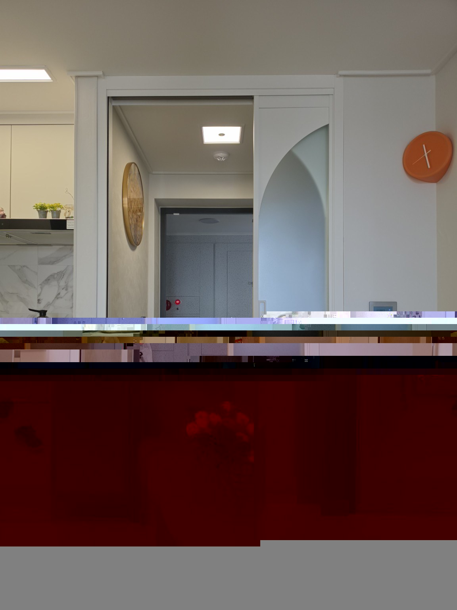
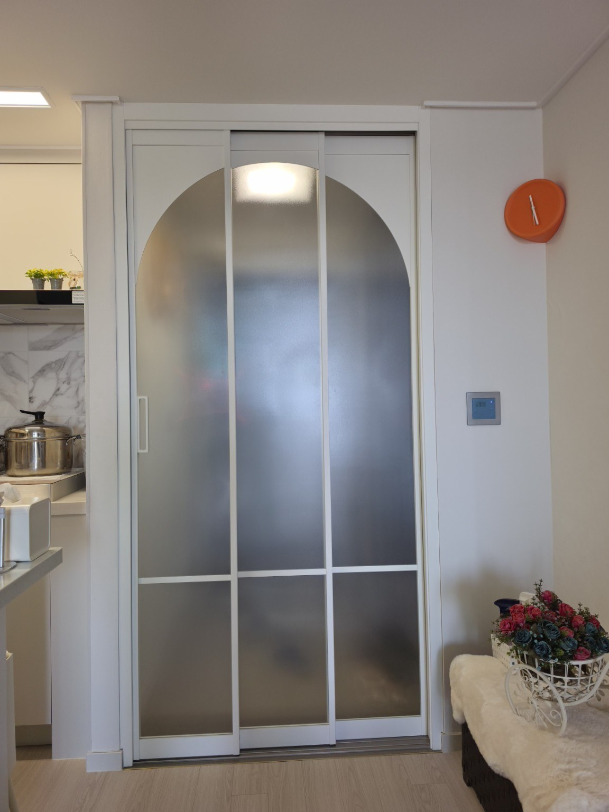
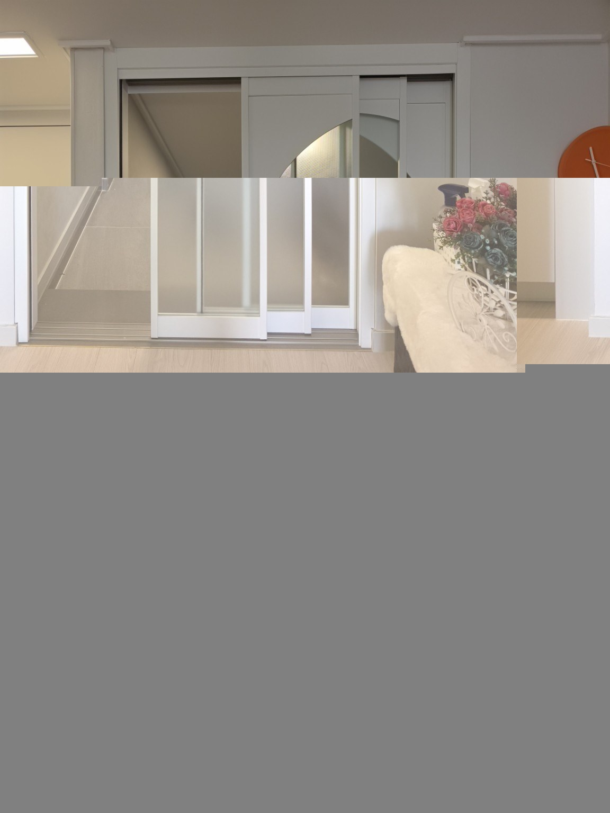
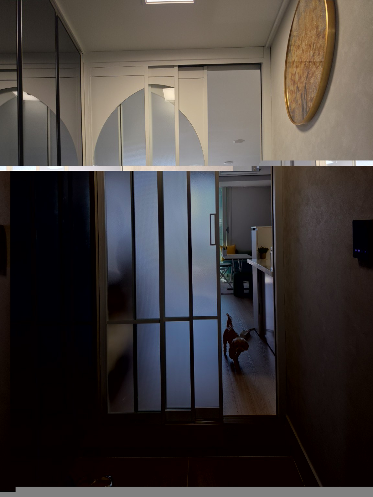
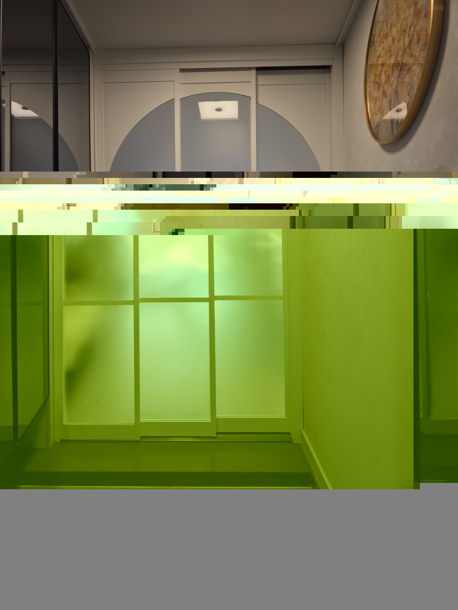
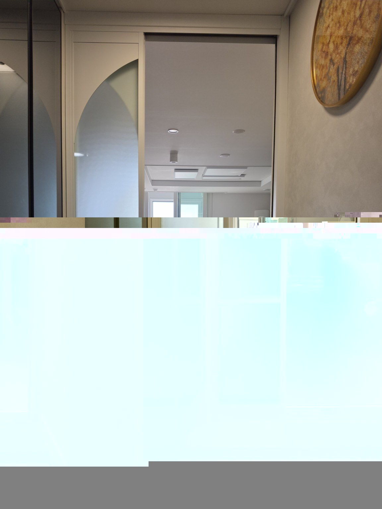

중랑구 SK뷰 롯데캐슬 12평형
신형 85mm 아치형 3연동 현관중문 시공
중랑구 SK뷰 롯데캐슬 12평형에 신형 85mm 아치형 3연동 현관중문을 시공했습니다. 영림 170번 프레임과 투명 샤틴 강화유리를 조합한 현장입니다.
시공 정보
현장 : 중랑구 SK뷰 롯데캐슬 12평형
중문 : 신형 85mm 아치형 3연동
색상 : 영림 170번
유리 : 투명 샤틴 강화유리
현장 : 중랑구 SK뷰 롯데캐슬 12평형
중문 : 신형 85mm 아치형 3연동
색상 : 영림 170번
유리 : 투명 샤틴 강화유리
아치 디자인과 3연동 구성
문을 닫았을 때 이어지는 아치 라인과 문을 열었을 때의 출입 공간을 사진으로 확인할 수 있습니다. 실내와 현관 양쪽에서 촬영한 사진으로 프레임, 유리, 개방 모습을 소개합니다.
시공사진 6장
사진을 누르면 새 창에서 크게 볼 수 있습니다.






자주 묻는 질문 (FAQ)
Q. 이번 현장에는 어떤 중문을 시공했나요?
중랑구 SK뷰 롯데캐슬 12평형에 신형 85mm 아치형 3연동 현관중문을 시공했습니다.
Q. 색상과 유리 사양은 무엇인가요?
프레임 색상은 영림 170번이며, 유리는 투명 샤틴 강화유리를 적용했습니다.
Q. 12평형에도 3연동 중문을 설치할 수 있나요?
이번 12평형 현장에는 3연동 중문을 설치했습니다. 다른 현장의 설치 가능 여부와 크기는 현관 폭, 신발장 위치, 출입 동선을 확인한 뒤 안내합니다.